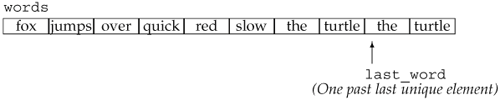
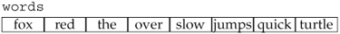

11.2. A First Look at the AlgorithmsBefore covering the structure of the algorithms library, let's look at a couple of examples. We've already seen the use of find; in this section we'll use a few additional algorithms. To use a generic algorithm, we must include the algorithm header:
#include <algorithm>
The library also defines a set of generalized numeric algorithms, using the same conventions as the generic algorithms. To use these algorithms we include the numeric header:
#include <numeric>
With only a handful of exceptions, all the algorithms operate over a range of elements. We'll refer to this range as the "input range." The algorithms that take an input range always use their first two parameters to denote that range. These parameters are iterators used to denote the first and one past the last element that we want to process. Although most algorithms are similar in that they operate over an input range, they differ in how they use the elements in that range. The most basic way to understand the algorithms is to know whether they read elements, write elements, or rearrange the order of the elements. We'll look at samples of each kind of algorithm in the remainder of this section. 11.2.1. Read-Only AlgorithmsA number of the algorithms read, but never write to, the elements in their input range. find is one such algorithm. Another simple, read-only algorithm is accumulate, which is defined in the numeric header. Assuming vec is a vector of int values, the following code
// sum the elements in vec starting the summation with the value 42
int sum = accumulate(vec.begin(), vec.end(), 42);
sets sum equal to the sum of the elements in vec plus 42. accumulate takes three parameters. The first two specify a range of elements to sum. The third is an initial value for the sum. The accumulate function sets an internal variable to the initial value. It then adds the value of each element in the range to that initial value. The algorithm returns the result of the summation. The return type of accumulate is the type of its third argument.
There are two implications of the fact that accumulate doesn't know about the types over which it sums. First, we must pass an initial starting value because otherwise accumulate cannot know what starting value to use. Second, the type of the elements in the container must match or be convertible to the type of the third argument. Inside accumulate, the third argument is used as the starting point for the summation; the elements in the container are successively added into this sum. It must be possible to add the element type to the type of the sum. As an example, we could use accumulate to concatenate the elements of a vector of strings:
// concatenate elements from v and store in sum
string sum = accumulate(v.begin(), v.end(), string(""));
The effect of this call is to concatenate each element in vec onto a string that starts out as the empty string. Note that we explicitly create a string as the third parameter. Passing a character-string literal would be a compile-time error. If we passed a string literal, the summation type would be const char* but the string addition operator (Section 3.2.3, p. 86) for operands of type string and const char* yields a string not a const char*. Using find_first_ofIn addition to find, the library defines several other, more complicated searching algorithms. Several of these are similar to the find operations of the string class (Section 9.6.4, p. 343). One such is find_first_of. This algorithm takes two pairs of iterators that denote two ranges of elements. It looks in the first range for a match to any element from the second range and returns an iterator denoting the first element that matches. If no match is found, it returns the end iterator of the first range. Assuming that roster1 and roster2 are two lists of names, we could use find_first_of to count how many names are in both lists:
// program for illustration purposes only:
// there are much faster ways to solve this problem
size_t cnt = 0;
list<string>::iterator it = roster1.begin();
// look in roster1 for any name also in roster2
while ((it = find_first_of(it, roster1.end(),
roster2.begin(), roster2.end()))
!= roster1.end()) {
++cnt;
// we got a match, increment it to look in the rest of roster1
++it;
}
cout << "Found " << cnt
<< " names on both rosters" << endl;
The call to find_first_of looks for any element in roster2 that matches an element from the first rangethat is, it looks for an element in the range from it to roster1.end(). The function returns the first element in that range that is also in the second range. On the first trip through the while, we look in the entire range of roster1. On second and subsequent trips, we look in that part of roster1 that has not already been matched. In the condition, we check the return from find_first_of to see whether we found a matching name. If we got a match, we increment our counter. We also increment it so that it refers to the next element in roster1. We know we're done when find_first_of returns roster1.end(), which it does if there is no match.
11.2.2. Algorithms that Write Container ElementsSome algorithms write element values. When using algorithms that write elements, we must take care to ensure that the sequence into which the algorithm writes is at least as large as the number of elements being written. Some algorithms write directly into the input sequence. Others take an additional iterator that denotes a destination. Such algorithms use the destination iterator as a place in which to write output. Still a third kind writes a specified number of elements to some sequence. Writing to the Elements of the Input SequenceThe algorithms that write to their input sequence are inherently safethey write only as many elements as are in the specified input range. A simple example of an algorithm that writes to its input sequence is fill:
fill(vec.begin(), vec.end(), 0); // reset each element to 0
// set subsequence of the range to 10
fill(vec.begin(), vec.begin() + vec.size()/2, 10);
fill takes a pair of iterators that denote a range in which to write copies of its third parameter. It executes by setting each element in the range to the given value. Assuming that the input range is valid, then the writes are safe. The algorithm writes only to elements known to exist in the input range itself. Algorithms Do Not Check Write OperationsThe fill_n function takes an iterator, a count, and a value. It writes the specified number of elements with the given value starting at the element referred to by the iterator. The fill_n function assumes that it is safe to write the specified number of elements. It is a fairly common beginner mistake to call fill_n (or similar algorithms that write to elements) on a container that has no elements:
vector<int> vec; // empty vector
// disaster: attempts to write to 10 (nonexistent) elements in vec
fill_n(vec.begin(), 10, 0);
This call to fill_n is a disaster. We specified that ten elements should be written, but there are no such elements vec is empty. The result is undefined and will probably result in a serious run-time failure.
Introducing back_inserterOne way to ensure that an algorithm has enough elements to hold the output is to use an insert iterator. An insert iterator is an iterator that adds elements to the underlying container. Ordinarily, when we assign to a container element through an iterator, we assign to the element to which the iterator refers. When we assign through an insert iterator, a new element equal to the right-hand value is added to the container. We'll have more to say about insert iterators in Section 11.3.1 (p. 406). However, in order to illustrate how to safely use algorithms that write to a container, we will use back_inserter. Programs that use back_inserter must include the iterator header. The back_inserter function is an iterator adaptor. Like the container adaptors (Section 9.7, p. 348), an iterator adaptor takes an object and generates a new object that adapts the behavior of its argument. In this case, the argument to back_inserter is a reference to a container. back_inserter generates an insert iterator bound to that container. When we attempt to assign to an element through that iterator, the assignment calls push_back to add an element with the given value to the container. We can use back_inserter to generate an iterator to use as the destination in fill_n:
vector<int> vec; // empty vector
// ok: back_inserter creates an insert iterator that adds elements to vec
fill_n (back_inserter(vec), 10, 0); // appends 10 elements to vec
Now, each time fill_n writes a value, it will do so through the insert iterator generated by back_inserter. The effect will be to call push_back on vec, adding ten elements to the end of vec, each of which has the value 0. Algorithms that Write to a Destination IteratorA third kind of algorithm writes an unknown number of elements to a destination iterator. As with fill_n, the destination iterator refers to the first element of a sequence that will hold the output. The simplest such algorithm is copy. This algorithm takes three iterators: The first two denote an input range and the third refers to an element in the destination sequence. It is essential that the destination passed to copy be at least as large as the input range. Assuming ilst is a list holding ints, we might copy it into a vector:
vector<int> ivec; // empty vector
// copy elements from ilst into ivec
copy (ilst.begin(), ilst.end(), back_inserter(ivec));
copy reads elements from the input range, copying them to the destination. Of course, this example is a bit inefficient: Ordinarily if we want to create a new container as a copy of an existing container, it is better to use an input range directly as the initializer for a newly constructed container:
// better way to copy elements from ilst
vector<int> ivec(ilst.begin(), ilst.end());
Algorithm _copy VersionsSeveral algorithms provide so-called "copying" versions. These algorithms do some processing on the elements of their input sequence but do not change the original elements. Instead, a new sequence is written that contains the result of processing the elements of the original. The replace algorithm is a good example. This algorithm reads and writes to an input sequence, replacing a given value by a new value. The algorithm takes four parameters: a pair of iterators denoting the input range and a pair of values. It substitutes the second value for each element that is equal the first:
// replace any element with value of 0 by 42
replace(ilst.begin(), ilst.end(), 0, 42);
This call replaces all instances of 0 by the 42. If we wanted to leave the original sequence unchanged, we would call replace_copy. That algorithm takes a third iterator argument denoting a destination in which to write the adjusted sequence:
// create empty vector to hold the replacement
vector<int> ivec;
// use back_inserter to grow destination as needed
replace_copy (ilst.begin(), ilst.end(),
back_inserter(ivec), 0, 42);
After this call, ilst is unchanged, and ivec contains a copy of ilst with the exception that every element in ilst with the value 0 has the value 42 in ivec. 11.2.3. Algorithms that Reorder Container ElementsSuppose we want to analyze the words used in a set of children's stories. For example, we might want know how many words contain six or more characters. We want to count each word only once, regardless of how many times it appears or whether it appears in multiple stories. We'd like to be able to print the words in size order, and we want the words to be in alphabetic order within a given size. We'll assume that we have read our input and stored the text of each book in a vector of strings named words. How might we solve the part of the problem that involves counting word occurrences? To solve this problem, we'd need to:
We can use generic algorithms in each of these steps. For purposes of illustration, we'll use the following simple story as our input:
the quick red fox jumps over the slow red turtle
Given this input, our program should produce the following output:
1 word 6 characters or longer
Eliminating DuplicatesAssuming our input is in a vector named words, our first subproblem is to eliminate duplicates from the words:
// sort words alphabetically so we can find the duplicates
sort(words.begin(), words.end());
/* eliminate duplicate words:
* unique reorders words so that each word appears once in the
* front portion of words and returns an iterator one past the unique range;
* erase uses a vector operation to remove the nonunique elements
*/
vector<string>::iterator end_unique =
unique(words.begin(), words.end());
words.erase(end_unique, words.end());
Our input vector contains a copy of every word used in each story. We start by sorting this vector. The sort algorithm takes two iterators that denote the range of elements to sort. It uses the < operator to compare the elements. In this call we ask that the entire vector be sorted. After the call to sort, our vector elements are ordered:
fox jumps over quick red red slow the the turtle
Note that the words red and the are duplicated. Using uniqueOnce words is sorted, our problem is to keep only one copy of each word that is used in our stories. The unique algorithm is well suited to this problem. It takes two iterators that denote a range of elements. It rearranges the elements in the input range so that adjacent duplicated entries are eliminated and returns an iterator that denotes the end of the range of the unique values. After the call to unique, the vector holds words  Note that the size of words is unchanged. It still has ten elements; only the order of these elements has changed. The call to unique "removes" adjacent duplicates. We put remove in quotes because unique doesn't remove any elements. Instead, it overwrites adjacent duplicates so that the unique elements are copied into the front of the sequence. The iterator returned by unique denotes one past the end of the range of unique elements. Using Container Operations to Remove ElementsIf we want to eliminate the duplicate items, we must use a container operation, which we do in the call to erase. This call erases the elements starting with the one to which end_unique refers through the end of words. After this call, words contains the eight unique words from the input.
It is worth noting that this call to erase would be safe even if there were no duplicated words in our vector. If there were no duplicates, then unique would return words.end(). Both arguments in the call to erase would have the same value, words.end(). The fact that the iterators are equal would mean that the range to erase would be empty. Erasing an empty range has no effect, so our program is correct even if the input has no duplicates. Defining Needed Utility FunctionsOur next subproblem is to count how many words are of length six or greater. To solve this problem, we'll use two additional generic algorithms: stable_sort and count_if. To use each of these algorithms we'll need a companion utility function, known as a predicates. A predicate is a function that performs some test and returns a type that can be used in a condition to indicate success or failure. The first predicate we need will be used to sort the elements based on size. To do this sort, we need to define a predicate function that compares two strings and returns a bool indicating whether the first is shorter in length than the second:
// comparison function to be used to sort by word length
bool isShorter(const string &s1, const string &s2)
{
return s1.size() < s2.size();
}
The other function we need will determine whether a given string is of length six or greater:
// determine whether a length of a given word is 6 or more
bool GT6(const string &s)
{
return s.size() >= 6;
}
Although this function solves our problem, it is unnecessarily limitedthe function hardwires the size into the function itself. If we wanted to find out how many words were of another length, we'd have to write another function. We could easily write a more general comparison function that took two parameters, the string and the size. However, the function we pass to count_if takes a single argument, so we cannot use the more general approach in this program. We'll see a better way to write this part of our solution in Section 14.8.1 (p. 531). Sorting AlgorithmsThe library defines four different sort algorithms, of which we've used the simplest, sort, tosort words into alphabetical order. In addition to sort, the library also defines a stable_sort algorithm. A stable_sort maintains the original order among equal elements. Ordinarily, we don't care about the relative order of equal elements in a sorted sequence. After all, they're equal. However, in this case, we have defined "equal" to mean "the same length." Elements that have the same length can still be distinct when viewed alphabetically. By calling stable_sort, we maintain alphabetic order among those elements that have the same length. Both sort and stable_sort are overloaded functions. One version uses the < operator for the element type to do the comparison. We used this version of sort to sort words before looking for duplicate elements. The second version takes a third parameter: the name of a predicate to use when comparing elements. That function must take two arguments of the same type as the element type and return a value that can be tested in a condition. We will use this second version, passing our isShorter function to compare elements:
// sort words by size, but maintain alphabetic order for words of the same size
stable_sort(words.begin(), words.end(), isShorter);
After this call, words is sorted by element size, but the words of each length are also still in alphabetical order:  Counting Words of Length Six or MoreNow that we've reordered our vector by word size, our remaining problem is to count how many words are of length six or greater. The count_if algorithm handles this problem:
vector<string>::size_type wc =
count_if(words.begin(), words.end(), GT6);
count_if executes by reading the range denoted by its first two parameters. It passes each value that it reads to the predicate function represented by its third argument. That function must take a single argument of the element type and must return a value that can be tested as a condition. The algorithm returns a count of the number of elements for which the function succeeded. In this case, count_if passes each word to GT6, which returns the bool value true if the word's length is six or more. Putting It All TogetherHaving looked at the program in detail, here is the program as a whole:
// comparison function to be used to sort by word length
bool isShorter(const string &s1, const string &s2)
{
return s1.size() < s2.size();
}
// determine whether a length of a given word is 6 or more
bool GT6(const string &s)
{
return s.size() >= 6;
}
int main()
{
vector<string> words;
// copy contents of each book into a single vector
string next_word;
while (cin >> next_word) {
// insert next book's contents at end of words
words.push_back(next_word);
}
// sort words alphabetically so we can find the duplicates
sort (words.begin(), words.end());
/* eliminate duplicate words:
* unique reorders words so that each word appears once in the
* front portion of words and returns an iterator one past the unique range;
* erase uses a vector operation to remove the nonunique elements
*/
vector<string>::iterator end_unique =
unique(words.begin(), words.end());
words.erase(end_unique, words.end());
// sort words by size, but maintain alphabetic order for words of the same size
stable_sort(words.begin(), words.end(), isShorter);
vector<string>::size_type wc =
count_if (words.begin(), words.end(), GT6);
cout << wc << " " << make_plural(wc, "word", "s")
<< " 6 characters or longer" << endl;
return 0;
}
We leave as an exercise the problem of printing the words in size order.
|